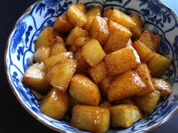

Grilled Teriyaki Potatoes

Description
This is one of my favorite recipes. My dad taught it to me and it couldn't be simpler.
As you'll see below, it scores very high on the Time Spent vs. Results Yielded coefficient.
Ingredients
- Potatoes of your choice, as few or as many as you'd like to eat
- Teriyaki sauce (soy sauce is also great)
Steps
- Wash your potatoes.
- Carefully poke a few holes in each potato with a fork.
- Cook potatoes in the microwave in increments of 2-3 minutes.
You will know they are done when a fork easily goes into the potato.
- Cut cooked potatoes into wedges or cubes (personal preference) about an inch thick.
- Arrange on a baking sheet or tray and sprinkle liberal amounts of your teriyaki sauce over the potatoes.
- Flip or rotate your wedges to evenly coat all sides your potatoes.
- Let sit for 3-4 minutes to absorb the teriyaki sauce.
- Place on a hot grill and cook for a few minutes on each side.
While your potatoes are technically already cooked, this step adds flavor and texture.
- Serve and enjoy. Say you spent hours on them.